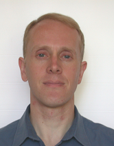

|
 Dr Glenn ThompsonResearch Professional 3 (Network Seismologist) Contact detailsTelephone extension: 7424 Email address: glenn@giseis.alaska.edu Room: 307a ResearchTook a Combined Honours BSc in Theoretical Physics and Mathematics at St. Andrews, an MSc in Geophysics at Durham and then a PhD in Volcano-seismology at Leeds. First came to the Geophysical Institute as an AVO postdoc in 1998, then worked as the Seismologist and Deputy Director of the Montserrat Volcano Observatory for many years before returning to Alaska in 2006. His main work is developing seismic monitoring systems for a variety of different purposes and clients. This has included innovative systems for tracking volcanic tremor, earthquake swarms and the trajectory of pyroclastic flows in near-real-time. Publications |